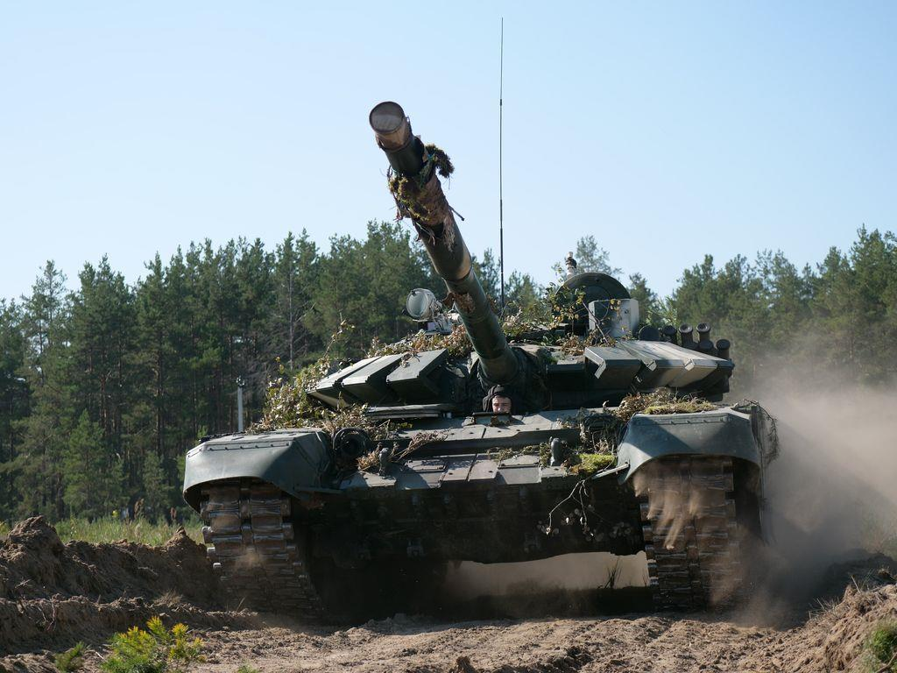
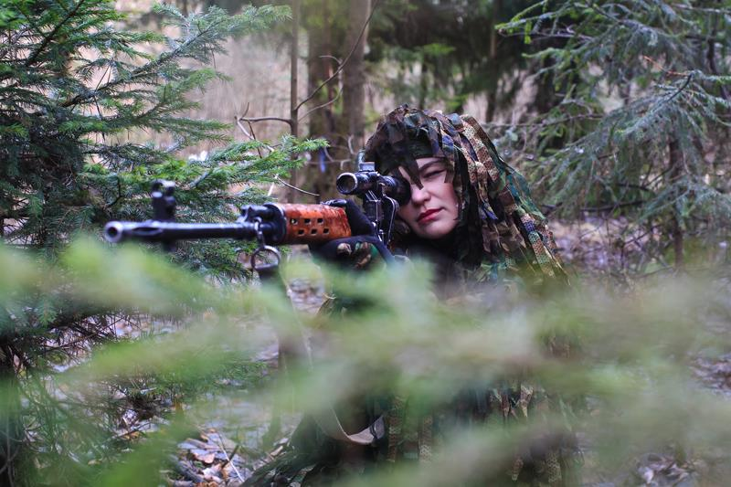
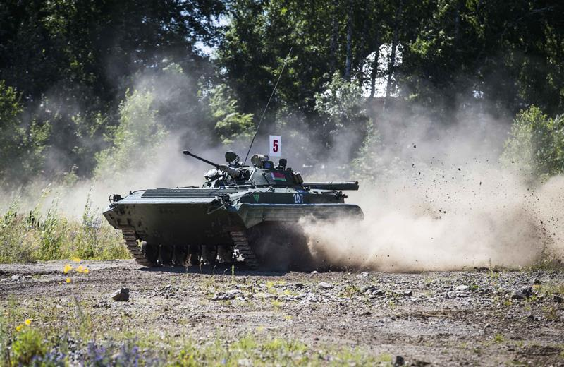
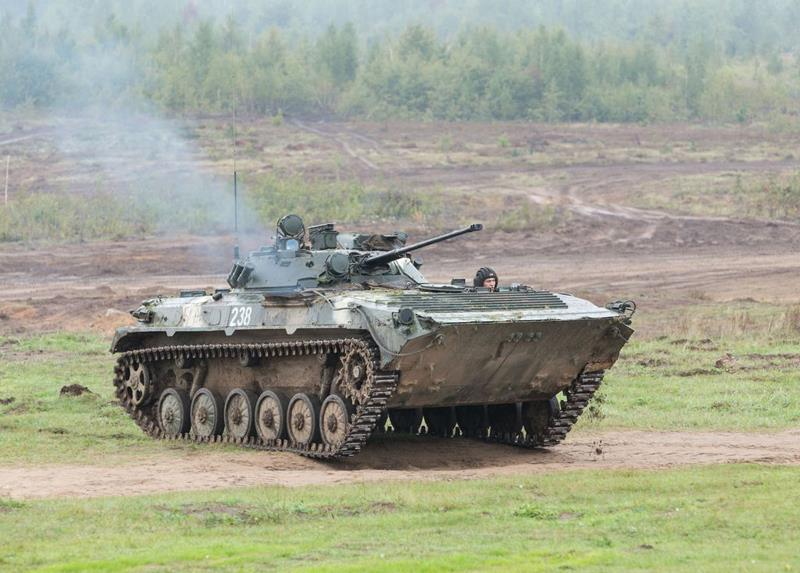

День мотострелков. История праздника
21 сентября личный состав и ветераны Вооруженных Сил отмечают День мотострелков.

Профессиональный праздник воинов-мотострелков учрежден в 2005 году приказом Министра обороны Республики Беларусь в ознаменование заслуг и героизма стрелковых, мотострелковых и механизированных объединений, соединений и воинских частей в годы Великой Отечественной войны.
Первые мотострелковые полки в Вооруженных Силах СССР были созданы в 1939 году. В годы Великой Отечественной войны уже в первых приграничных сражениях на белорусской земле гитлеровцы встретили сопротивление, какого не испытали ни в одной из военных кампаний в Европе.
В районе Борисова, на шоссе Минск — Москва, 1-я Московская мотострелковая дивизия хорошо организованной контратакой задержала наступление войск противника на двое суток. Отходя затем в направлении Орши, соединение упорной обороной рубежей и контратаками изматывало наступающие немецкие соединения.

Стрелковые соединения и воинские части Западного фронта, сражавшиеся под Минском и Могилевом, Оршей и Витебском, Смоленском и Москвой, Сталинградом и Курском отличились массовым героизмом, непоколебимой стойкостью, беспримерной самоотверженностью. Именно на Западном фронте родилась и навеки прославила себя Советская гвардия.
В ходе Великой Отечественной войны пехота оснащалась новым, более совершенным оружием и военной техникой, автотранспортом и как род войск получила дальнейшее всестороннее развитие. В целях успешного ведения боя стрелковые части и соединения усиливались артиллерийскими, танковыми и другими подразделениями и частями.

После Великой Отечественной войны стрелковые войска получили новые виды вооружения и бронированные боевые машины, что увеличило их подвижность и создало возможность для ведения боя не только в пешем порядке, но и непосредственно на боевых машинах пехоты (бронетранспортерах).
С 15 мая 1957 года в целях приведения организационной структуры войск в соответствие с изменившимися требованиями к ведению боя и операций все стрелковые соединения и воинские части Белорусского военного округа были переформированы в мотострелковые.
Опыт участия воинских формирований различных стран мира в вооруженных конфликтах последних лет показывает, что основная тяжесть при локализации напряженности всегда ложилась на сухопутные войска, на основную их составляющую — мотострелковые и механизированные воинские части и подразделения.
В настоящее время механизированные соединения составляют основу оперативных командований Вооруженных Сил Республики Беларусь. Оснащенные современной боевой техникой и вооружением, укомплектованные высокопрофессиональными кадрами, соединения и воинские части продолжают лучшие традиции воинской доблести и славы защитников Отечества, качественно решая стоящие перед ними задачи по обеспечению военной безопасности страны.

